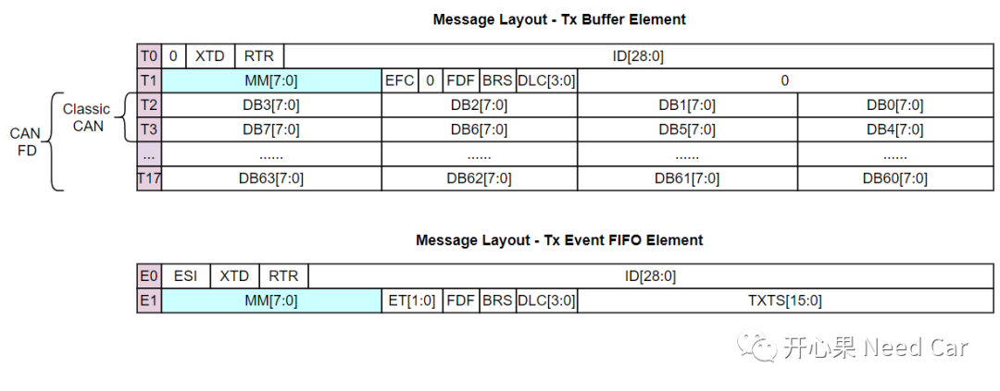
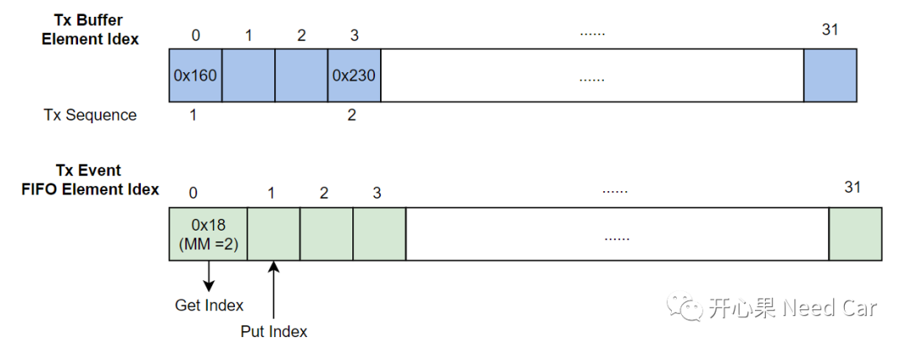
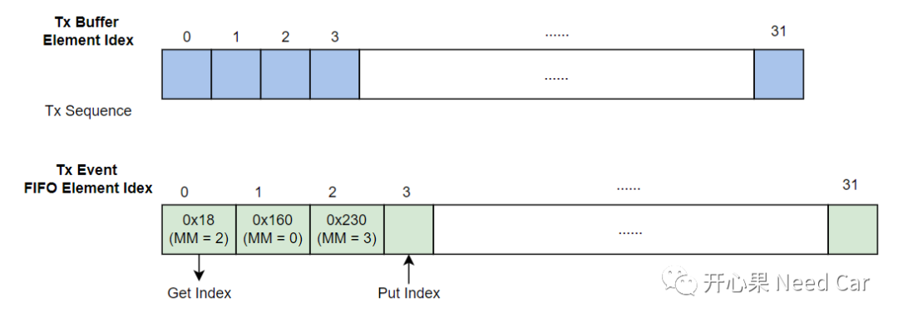
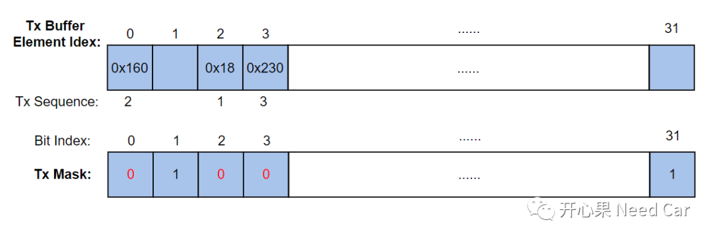
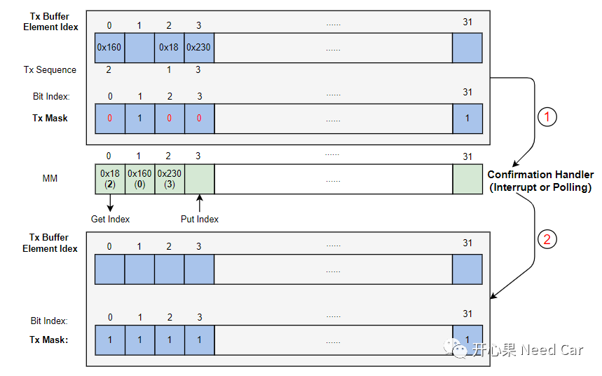

开心果 Need Car · 2022-06-24T20:15:00+08:00 · 微信原文
本文要讨论一下英飞凌tc397发送处理:Tx Event Handling。对于使用Aurix系列产品的同学，如果能消化好此部分内容，有助于解决项目中通信相关的问题（切身感受）。
当上层请求的发送报文成功放入底层缓冲区以后（发送请求成功），每个发送报文信息会放入对应的Tx Buffer Element空间，Classic CAN和CAN FD使用的空间大小不同（Classic CAN占用8 bytes Data空间，CAN FD最多可以占用64 bytes Data空间）。每当一个发送报文成功发送到总线以后，会将对应报文的发送信息存入Tx Event FIFO Element空间（不包含发送的数据），如何知道哪个Tx Buffer Element空间位置（Range:0~31）的报文发送了呢？报文成功发送到总线以后，会将发送报文对应Tx Buffer Element空间的MM（Message Marker，记录发送报文在Tx Buffer Element空间的索引）存入Tx Event FIFO Element空间的MM Field（以FIFO的形式存储）。这样即可通过MM反向查找已发送报文所在Tx Buffer的Index。
Tx Buffer Element与Tx Event FIFO Element空间布局如下所示：

如何理解上述的表述呢？假设有3个发送报文成功存入Tx Buffer，三个发送报文的CanID分别是0x160，0x18，0x230。之后分别置位对应的发送请求（操作TXBARi (i=0-3)寄存器），发送扫描器(Tx Scan)根据优先级（CanID越小，发送优先级越高）发送Tx Buffer中的数据，上述三个报文的发送顺序：0x18->0x160->0x230。
发送完0x18报文以后，Tx Event FIFO空间存储0x18报文信息，放在Tx Event FIFO Element Idex = 0的位置(MM = 2)，Tx Buffer中，报文的发送顺序变化如下所示：0x160->0x230。

发送完0x160和0x230以后，依次存放0x160和0x230的信息，如下所示：

到此，虽然0x160，0x18，0x230已经成功发送到总线，对应的Tx Buffer空出来了，但是还不能使用，因为驱动层依然在锁住对应的Tx Buffer，只有通知完上层（Tx Confirmation），才能将对应的Tx Buffer空间释放。可以参考前文Autosar通信栈：发送返回OK和发送确认是一回事吗。
如何通过MM释放Tx Buffer空间
Step1，上层请求报文发送时，先查找Tx Buffer可用的空间，找到可用的空间以后才能缓存待发送报文数据。如何知道哪个空间（一共32个发送缓冲区）可用呢？32个发送缓冲区用一个Tx Mask维护，每个Tx Mask Bit（0~31）对应一个Tx Buffer Element可用状态，1表示此Tx Buffer位置空闲，0表示此Tx Buffer已经被占用。如下，Tx Buffer的位置0、2、3分别被0x160、0x18、0x230占用，所以对应Tx Buffer位置 = 0，空闲的位保持1，如下所示：

Step2，缓存区中的发送报文成功发送到总线以后，发送信息保存到Tx Event FIFO空间。如果使用Interrupt方式，数据发送成功以后，进入发送中断例程，进行Confirmation处理，通过Tx Event FIFO空间存储的MM信息（存储Tx Buffer Index，0~31）可以知道Tx Buffer哪个位置上的数据发送成功，之后将对应的Tx Mask置位（=1），当再有数据要发送时，释放的Tx Buffer位置可以再次使用，如下所示：

提示：Polling方式，Confirmation处理同Step2。
最后，更正前文中的一个错误点，在Autosar通信栈：FullCAN和BasicCAN基础一文中，提到：“每个CAN Module（4个Controller）共用32个发送Tx Buffer，共用64个Rx Buffer...”，此理解有误，是每个Controller最多可以配置32个发送Tx Buffer，64个Dedicated Rx Buffers，64个Rx FIFO0和64个Rx FIFO1...
往期精彩回顾